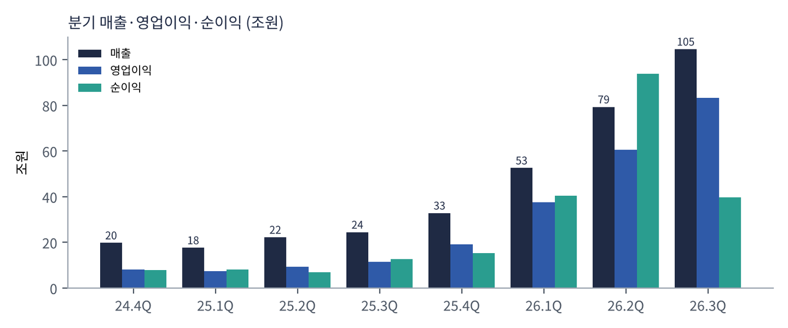
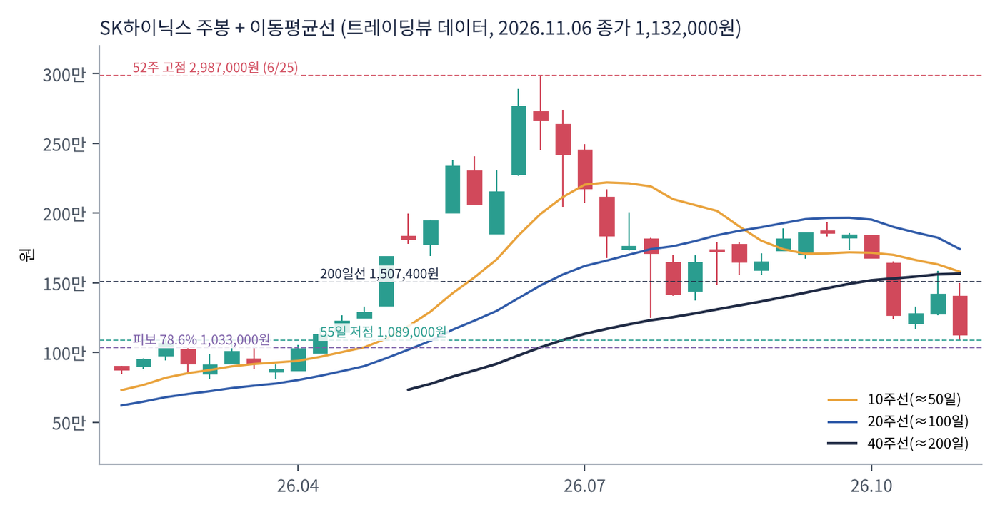
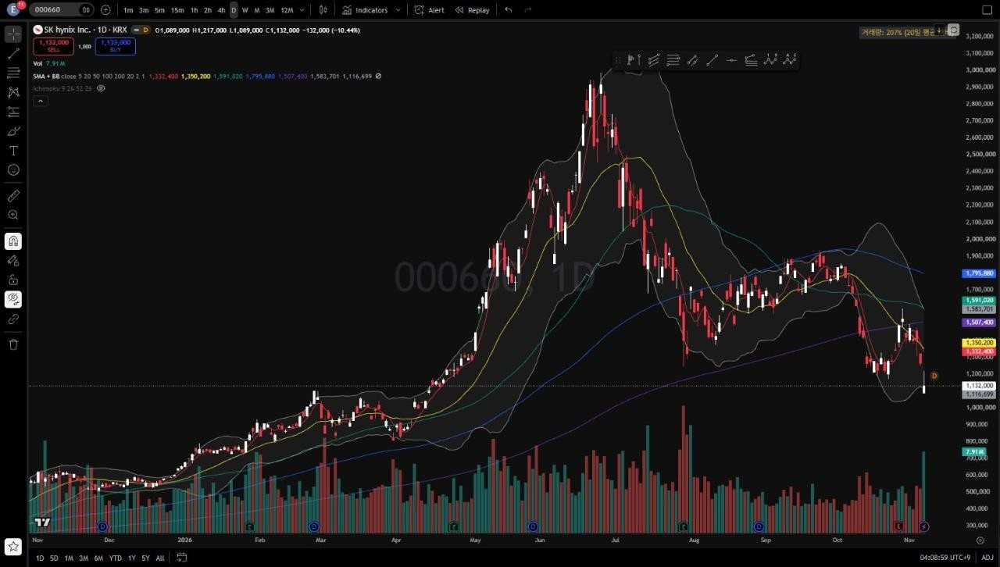
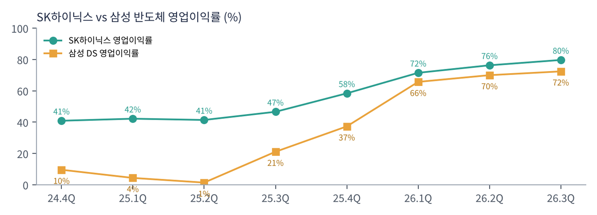

SK하이닉스는 D램 세계 2위, 낸드 세계 상위권의 메모리 반도체 전업 회사다. AI 가속기 옆에 붙는 고대역폭 메모리(HBM)에서 세계 1위이며 엔비디아의 핵심 공급사다. 낸드 자회사 솔리다임(옛 인텔 낸드 사업)을 갖고 있다.
| 항목 | 내용 |
|---|---|
| 종목 | SK하이닉스 (000660) · 메모리 반도체 · 1983년 설립(현대전자) · 본사 경기도 이천 |
| 경영진 | 곽노정 대표이사 사장(CEO) |
| 시가총액 | 약 1,018조 원 (11/6 종가, 트레이딩뷰 기준) |
| 최근 분기(26.3Q) | 매출 104.6조 원(+328%), 영업이익 83.3조 원(+632%), 순이익 39.8조 원(+216%), EBITDA 87.7조 원(마진 84%) |
| 밸류에이션 | 순현금 98.7조 원 차감 기업가치 약 919조 원 ÷ 3분기 영업이익 연환산 333조 원 ≈ 2.8배 |
| 주주환원 | 2026 회계연도 약 100조 원(현금배당 30조+, 자사주 매입·소각 60조+). 3분기 배당 주당 2만 원(특별배당 1만 원 포함) |
| 분기 | 매출 | YoY | 영업이익 | 이익률 | 순이익 | 특징 |
|---|---|---|---|---|---|---|
| 2024.4Q | 19.8조 | +75% | 8.1조 | 41% | 8.0조 | HBM이 D램 매출의 40% 이상 |
| 2025.1Q | 17.6조 | +42% | 7.4조 | 42% | 8.1조 | 계절적 비수기 |
| 2025.2Q | 22.2조 | +35% | 9.2조 | 41% | 7.0조 | HBM3E 12단 확대 |
| 2025.3Q | 24.4조 | +39% | 11.4조 | 47% | 12.6조 | 범용 D램 가격 반등 시작 |
| 2025.4Q | 32.8조 | +66% | 19.2조 | 58% | 15.2조 | D램·낸드 가격 급등 |
| 2026.1Q | 52.6조 | +198% | 37.6조 | 72% | 40.3조 | 고용량 서버 모듈·eSSD 확대 |
| 2026.2Q | 79.3조 | +257% | 60.5조 | 76% | 93.9조 | 투자 이익(키옥시아 등)으로 순이익 > 매출 |
| 2026.3Q | 104.6조 | +328% | 83.3조 | 80% | 39.8조 | HBM4 본격 출하, 매출 첫 100조 |

성장의 두 단계. 2024년 4분기 ~ 2025년 3분기는 HBM이 이끈 성장이었다. 매출은 20조 원 안팎에서 완만하게 늘고 이익률은 40%대였다. 2025년 4분기부터는 범용 메모리 가격이 이끈 성장이다. AI 서버가 HBM뿐 아니라 일반 서버 D램과 SSD까지 빨아들이면서 모든 메모리 가격이 폭등했고, 매출은 4개 분기 만에 3배가 됐다.
순이익은 영업 밖 항목으로 크게 흔들린다. 2026년 2분기 순이익 93.9조 원이 매출보다 큰 것은 키옥시아 등 투자자산 이익 때문이다. 3분기에는 반대로 환율 관련 순손실 11.6조 원과 투자자산 평가손실 22.9조 원이 겹쳐 순 영업외비용이 32.6조 원이었다. 회사는 키옥시아 투자로 실현한 이익 대부분을 특별배당으로 돌려주기로 했다. 본업의 힘은 영업이익(83.3조 원)과 EBITDA 마진(84%)으로 보는 것이 맞다.
| 항목 | 3분기 말 / 4분기 전망 |
|---|---|
| 현금성 자산 | 114.5조 원 (전 분기 대비 +26.5조 원) |
| 차입금 | 15.8조 원 (-2.8조 원) → 순현금 98.7조 원, 부채비율 5% |
| 감가상각비 | 분기 4.3조 원 |
| 4분기 D램 출하 | 전 분기 대비 20%대 중반 증가 |
| 4분기 낸드 출하 | 전 분기 대비 한 자릿수 중반 증가 |
| 4분기 제품 | HBM4가 출하량·매출 모두 HBM3E를 앞서 주력 제품으로 |
트레이딩뷰 000660 일봉 300개(2025.8 ~ 2026.11.6)와 주봉으로 계산했다. 결론부터 말하면 1년 동안 10배 오른 주식이 4개월 반 만에 62% 빠졌다. 국내 메모리 2사와 마이크론 중 낙폭이 가장 크다.


위: 주봉 재구성 차트. 아래: 트레이딩뷰 일봉 캡처(작도 없이 이동평균선·볼린저밴드만 표시).
| 이동평균 | 값 | 종가 대비 | 해석 |
|---|---|---|---|
| 5일선 | 1,332,400원 | -15.0% | 11/5(-9.5%), 11/6(-10.4%) 연속 급락 |
| 20일선 | 1,350,200원 | -16.2% | 5일선과 겹쳐 하락 중 |
| 50일선 | 1,591,020원 | -28.8% | 9~10월 박스(1,560,000~1,935,000원)의 하단 |
| 100일선 | 1,795,880원 | -37.0% | 6월 고점 영향으로 가장 높음 |
| 200일선 | 1,507,400원 | -24.9% | 10월 둘째 주 이탈 |
배열은 100일 > 50일 > 200일 > 20일 ≈ 5일 > 주가다. 주봉으로 보면 6월 고점(2,987,000원) 이후 7월 말 1,246,000원까지 -58% 1차 급락, 8~10월 1,560,000~1,935,000원 박스, 10월 둘째 주 박스 이탈(1,681,000 → 1,272,000원, 한 주 -24%), 10월 말 반등(1,587,000원) 실패, 11월 첫 주 1,089,000원까지 밀렸다. 거래량은 20일 평균의 207%로 투매 성격이 짙다.
| 규칙 | 기준 | 현재 값 | 신호 |
|---|---|---|---|
| 장기 추세 필터 | 종가 vs 200일선 | 1,132,000 < 1,507,400 | 매도 |
| 중장기 교차 | 50일선 vs 200일선 | 1,591,020 > 1,507,400 | 매수 |
| 단기 교차 | 20일선 vs 50일선 | 1,350,200 < 1,591,020 | 매도 |
| 돈키언 채널 | 55일 고가·저가 | 11/6 1,089,000원으로 55일 최저가 | 매도 |
| 1개월 모멘텀 | 21거래일 수익률 | -34.3% (기준 1,723,000원) | 매도 |
| 3개월 모멘텀 | 63거래일 수익률 | -28.2% (기준 1,577,000원) | 매도 |
| 6개월 모멘텀 | 126거래일 수익률 | -12.0% (기준 1,286,000원) | 매도 |
| 12개월 모멘텀 | 252거래일 수익률 | +111.6% (기준 535,000원) | 매수 |
| 종합 (8개 평균) | -0.50 | 매도 | |
해석: 삼성전자와 똑같은 구조다. 단기·중기 신호는 모두 매도이고, 12개월 모멘텀(1년 전 53만 원대)과 50/200일 교차만 매수로 남았다. 12개월 기준 가격은 2026년 1월부터 70~90만 원대, 3월 이후 100만 원 이상으로 올라간다. 지금 가격이 이어지면 2027년 3~4월에 12개월 신호도 매도로 바뀐다. 14일 ATR은 118,786원(주가의 10.5%)으로, 하루 10만 원 이상 움직이는 것이 보통인 구간이다.
| 가격 | 무엇이 바뀌나 | 의미 |
|---|---|---|
| 1,286,000원 | 6개월 모멘텀 기준 | 회복 시 매도 신호 하나 감소 |
| 1,350,000원 | 20일선 | 단기 반등 확인 |
| 1,507,000원 | 200일선 | 장기 추세 필터 매수 전환 — 추세 복귀 확인 |
| 50일선 < 200일선 | 데드크로스 (간격 83,600원) | 종합 -0.75로 악화 |
| 구분 | 가격대 | 근거 |
|---|---|---|
| 저항 2 | 1,450,000 ~ 1,507,000원 | 피보나치 61.8%(1,450,650원), 200일선 |
| 저항 1 | 1,246,000 ~ 1,350,000원 | 7월 말 저점·10월 종가대, 5·20일선 |
| 지지 1 | 1,033,000 ~ 1,089,000원 | 11/6 저가 1,089,000원 + 피보나치 78.6%(1,033,000원) |
| 지지 2 | 880,000 ~ 920,000원 | 2026년 3월 박스(808,000~1,060,000원) 중심 |
기본 판단: 역대 최강의 펀더멘털 vs 역대 최대의 정점 공포. 기업가치가 연환산 영업이익의 3배 미만이라는 숫자는, 시장이 지금 이익이 오래가지 않는다고 본다는 뜻이다. 회사는 장기 계약(2027~2028년 생산능력의 50% 이상)으로 이 공포에 답했지만, 시장은 아직 믿지 않는다. 변동성이 극단적이어서 비중을 작게, 손절 폭은 넓게 가져가야 한다.
| 가격대 | 시나리오 | 대응 |
|---|---|---|
| 1,560,000원 이상 | 박스 복귀 | 잔여 추세 추종 |
| 1,507,000원 종가 회복 | 장기 추세 필터 매수 전환 | 2차 익절 + 추세 매수 추가 |
| 1,033,000 ~ 1,132,000원 | 핵심 지지 테스트 | 분할 매수 50% |
| 960,000원 이하 종가 | 지지 붕괴 | 손절 |
| 880,000 ~ 920,000원 | 3월 박스 | 관망 |
SK하이닉스는 메모리만 판다. 그래서 실적은 D램과 낸드의 '출하량 × 가격'으로 거의 설명된다. 3분기 콜에서 밝힌 변화율은 다음과 같다.
| 제품 | 무엇을 누구에게 파나 | 3분기 출하 | 3분기 가격 |
|---|---|---|---|
| HBM | 엔비디아 등 AI 가속기 회사. D램을 수직으로 쌓아 GPU 옆에 붙이는 고대역폭 메모리. HBM4 3분기 본격 양산·출하, 수율은 계획 상회 | D램 전체: 출하 약 +10%, 가격 +20%대 후반 (서버 DDR5 출하 +40% 이상) | |
| 서버 D램 | 클라우드 회사의 AI·일반 서버용 DDR5, 고용량 모듈, AI 서버용 LPDDR5 SOCAMM | ||
| 모바일·PC D램 | 스마트폰·PC 제조사용 LPDDR·DDR | ||
| 낸드 | 데이터센터용 eSSD(321단 TLC), 솔리다임 QLC 고용량 SSD, 모바일 저장장치 | 소폭 감소(고부가 전환) | +20%대 중반 |
매출의 중심이 '데이터센터'로 완전히 옮겨갔다. 증권사 추정으로는 2026년 상반기에 이미 D램 매출에서 서버 D램과 HBM 합산 비중이 60%를 넘고, 낸드도 eSSD가 절반을 넘었다. 회사는 3분기 실적을 "HBM4 출하 본격화와 서버용 DDR5 판매 급증"으로 설명했다. 낸드에서도 321단 TLC eSSD가 늘며 데이터센터향 고부가 제품 전반이 성장했다.
가격 결정 방식이 바뀌고 있다. 장기 계약에는 "고객과 합의한 가격 범위 안에서 시장 상황을 반영하는 방식"을 넣었다. 메모리 가격이 오를 때 일부를 누리고, 떨어질 때는 바닥을 확보하는 구조다. 과거처럼 현물·분기 계약 가격에 이익이 통째로 흔들리던 사업 모델에서 벗어나려는 시도다.
곽노정 CEO는 3분기 실적 발표에서 회사의 변화를 이렇게 요약했다. "기술 경쟁력으로 쌓은 고객 신뢰가 장기 계약으로 이어지면서, 중장기 수요 가시성과 수익 안정성을 갖춘 사업 구조로 변화하고 있다." 목표는 두 가지로 정리된다.
| 목표 | 구체적 계획 |
|---|---|
| 1. 경기순환 기업에서 벗어나기 | 14개 주요 고객과 LTA, 2027~2028년 생산능력의 50% 이상. 일부 고객과는 통상 5년인 계약 기간을 더 늘리는 방안 논의. 시장 연동 가격 범위 도입 |
| 2. AI 메모리 풀스택 | HBM4 → HBM4E(2분기 샘플), 1c(10나노급 6세대) D램 비중 확대, AI 서버용 LPDDR5 SOCAMM, 321단 낸드 eSSD, 중장기적으로 HBF(고대역폭 플래시)와 시스템 최적화로 낸드를 "AI 서비스의 처리량과 경제성을 높이는 핵심 솔루션"으로 |
| 3. 생산능력 | 연말까지 M15X 생산능력 최대 → HBM4 증산. 2027년 용인 1기 팹 본격 가동, 투자 규모 2026년보다 크게 증가(시기·규모는 탄력 조정) |
| 4. 주주와 성과 공유 | FCF의 50% 이상 환원. 전략적 투자(키옥시아 등) 성과는 대부분 특별배당으로. 자사주 매입은 매 분기 |
회사가 그리는 그림은 'AI 시대의 TSMC'에 가깝다. 고객이 몇 년 앞을 내다보고 생산능력을 예약하고, 공급자는 그 계약을 담보로 대규모 투자를 하는 구조다. TSMC가 파운드리에서 그랬듯 메모리에서도 기술 1위 → 장기 계약 → 안정적 고마진의 선순환을 만들겠다는 것이다.
| 주제 | 회사의 말 (3분기 발표문·컨퍼런스콜) | 읽는 법 |
|---|---|---|
| AI 선순환 | 소프트웨어 개발·고객 응대·검색에서 AI가 생산성과 매출로 이어지면서, AI 사용 증가가 인프라 투자로 이어지는 선순환이 자리 잡았다 | 'AI 거품론'에 대한 반박 |
| 수요의 확산 | AI 투자의 주체가 소수 기업에서 일반 기업·국가로 넓어지고 있다. 단기는 기업·개인 AI, 중장기는 자율주행·로보틱스(피지컬 AI) | 엔비디아 ACIE 성장과 같은 흐름 |
| 공급 제약 | 선단 공정 난이도 상승, 신규 팹 건설 장기화로 2030년까지 수요가 공급을 웃도는 구조 지속 | 메모리 3사 중 가장 긴 전망 |
| 2027년 수요 | 달성 가능 수요 증가율 D램 20%대 중반, 낸드 10%대 후반. 글로벌 CSP 설비투자 +60% 이상 | 출하 증가율 자체도 높음 |
| HBM | 고객 요청이 현재 공급의 2배 이상(12단 HBM4 → 8단 HBM4E 사양 변경 사례 포함). 2027년 HBM 매출·이익 크게 증가 | 수요 > 공급 2배 |
| 매진 | LTA와 협의 물량을 합치면 2029년까지 D램·HBM이 사실상 매진 | 가시성 최상 |
엔비디아의 공급 약정이 $119B에서 $279B로 늘었고 "주로 메모리"라고 밝힌 것과 정확히 맞물린다. 공급자와 최대 고객이 같은 이야기를 하고 있다. 그런데도 주가가 -62%인 것은 시장이 '2030년까지 부족' 자체보다 '계약 가격이 시장 연동'이라는 점, 그리고 2027년 투자 급증을 경계하기 때문으로 보인다. 가격이 꺾이면 장기 계약도 범위 안에서 가격이 내려간다.
세계 1위. 2023년 이후 계속 매진이다. HBM4는 3분기 본격 양산, 4분기에 HBM3E를 넘어 주력이 된다. 삼성전자가 HBM4를 2026년 2월 세계 최초로 양산 출하하며 추격 중이고 마이크론도 경쟁하지만, 회사는 고객 요청이 공급의 2배 이상이라고 밝혔다.
3분기 서버 DDR5 출하 +40% 이상. 1c 공정 비중을 빠르게 높이고 AI 서버용 LPDDR5 SOCAMM 판매를 늘린다. 4분기 D램 출하 가이던스 +20%대 중반은 가격 외에 물량도 늘어난다는 뜻이다.
321단 TLC eSSD를 4분기 국내 생산능력의 절반 이상으로 늘리고, 솔리다임은 고용량 QLC로 AI 데이터센터를 공략한다. 솔리다임 IPO는 금융시장 상황을 이유로 검토를 중단하고 대체 자금 조달을 추진한다.
8월 발표 자사주 매입 40조 원 완료·소각 예정, 3분기분 배당 14조 원과 자사주 매입 20조 원(소각 10조 + 임직원 보상 10조). 순현금 98.7조 원으로 2027년 대규모 투자와 환원을 동시에 감당할 수 있는 구조다.

SK하이닉스와 삼성 DS부문의 영업이익률. 격차는 2025년 2분기 40%p에서 2026년 3분기 7%p로 줄었다. HBM 독주의 프리미엄이 범용 메모리 가격 급등으로 희석된 결과다.
| 경쟁/리스크 | 내용 | 강도 |
|---|---|---|
| 사이클 정점 | 2027~2028년 용인·평택·마이크론 신규 팹 동시 가동. 시장 연동 가격 구조상 가격 하락이 계약에도 일부 반영 | 높음 |
| HBM 경쟁 | 삼성 HBM4 세계 최초 양산·HBM4E 샘플, 마이크론 추격. 엔비디아 내 점유율 변화 | 중간~높음 |
| 고객 집중 | HBM 매출의 상당 부분이 엔비디아에 집중. 엔비디아 주가·자금 구조(보증·벤더 파이낸싱) 리스크가 간접 전이 | 중간 |
| 영업외 변동 | 환율·투자자산 평가로 분기 순이익이 수십조 원씩 흔들림 | 중간 |
| 투자 부담 | 2027년 설비투자 대폭 증가, 솔리다임 자금 조달 | 참고 |
4분기 실적(1월 말 발표)에서 출하 가이던스(D램 +20%대 중반)에 가격 상승이 얼마나 더해지는지가 핵심이다. 주가는 펀더멘털보다 반도체 업종 심리와 수급(레버리지 ETF 청산 등)에 끌려가고 있어, 200일선 회복 전까지 변동성이 클 것이다.
장기 계약 구조가 실제로 가격 하락기에 이익을 지켜 주는지가 SK하이닉스 재평가의 관건이다. 증명되면 '경기순환주'가 아닌 'AI 인프라 성장주'로 평가받을 수 있다. 반대로 2028년 공급 증가 때 가격이 크게 빠지면 지금의 낮은 배수가 정당화된다.